La escuela organiza
Prepara los equipos, acuerda su uso y facilita la participación del alumnado según las condiciones del plantel.
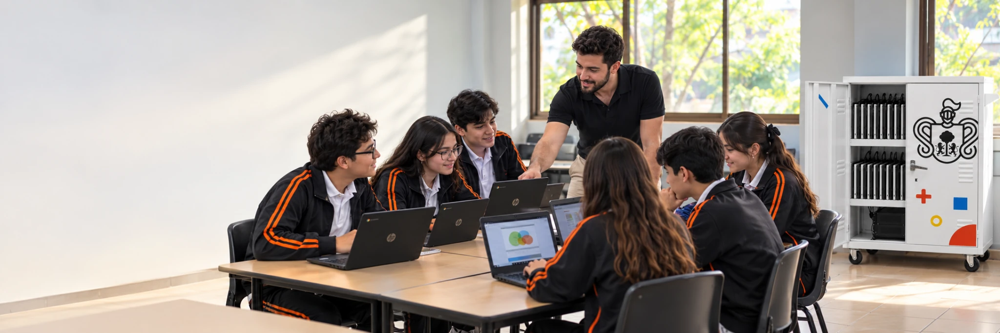
Como parte de Docente IA, esta guía de la Secretaría de Educación Jalisco acompaña a las escuelas en el uso del Aula Google para fortalecer los aprendizajes y las habilidades digitales de sus estudiantes.
El Gobierno de Jalisco impulsa una estrategia educativa que articula equipamiento, formación docente y renovación de la enseñanza. Aula Jalisco Digital y Docente IA forman parte de ese esfuerzo para fortalecer a las escuelas y ampliar las oportunidades de aprendizaje de niñas, niños y adolescentes. La meta compartida es contribuir a construir el mejor sistema educativo de México.
Esta guía forma parte de Docente IA. Acompaña a maestras, maestros y colectivos escolares para convertir los recursos disponibles en actividades con propósito: investigar, crear, colaborar y desarrollar habilidades digitales. Vincula el apoyo a la planeación y la evaluación con el uso cotidiano del Aula Google y con las necesidades de cada grupo.
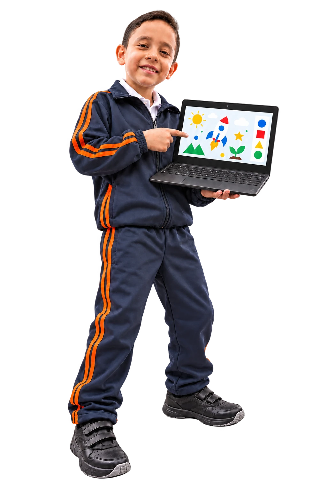
Prepara los equipos, acuerda su uso y facilita la participación del alumnado según las condiciones del plantel.
Define el aprendizaje, adapta la actividad a su contexto y orienta un uso crítico, responsable y con sentido pedagógico.
Explora preguntas, construye productos y utiliza la retroalimentación para mejorar su trabajo.
La estrategia estatal para el ciclo 2026–2027 incorpora Aula Jalisco Digital y Docente IA. Esta guía aporta acompañamiento operativo y pedagógico para llevar ese propósito a las actividades de clase.
Estrategia educativa de Jalisco, ciclo 2026–2027 ↗ · Meta estatal de calidad educativa ↗
Artículo 61. Orienta el uso de las tecnologías al fortalecimiento de la enseñanza, la innovación, el desarrollo de habilidades digitales y la reducción de desigualdades. Contempla su aprovechamiento responsable y pedagógico, y encarga a la autoridad educativa vigilar que los dispositivos se utilicen conforme a la ley estatal de derechos de niñas, niños y adolescentes en entornos digitales.
Artículo 62. Establece que la autoridad educativa estatal promoverá la formación y capacitación docente para desarrollar habilidades en el uso educativo de las tecnologías.
Consultar la Ley de Educación del Estado Libre y Soberano de Jalisco ↗
Texto consultado en la Biblioteca Virtual del Congreso de Jalisco el 26 de septiembre de 2026.
Docente IA ofrece apoyos para el diagnóstico, la planeación y la evaluación. Usa esta guía para preparar el equipo, organizar una actividad vinculada con la NEM y recoger evidencias de aprendizaje. Si cambia la conectividad, conserva el propósito y continúa con los materiales locales o en papel.
Conoce los componentes, comprueba las condiciones de uso y acuerda una rutina de préstamo y devolución.
El Aula Google reúne en una unidad móvil los equipos y el sistema de carga necesarios para llevar el trabajo digital a distintos espacios de la escuela. Integra 40 Chromebooks dentro de un gabinete con ruedas, donde se organizan, se resguardan y se conectan para recuperar su carga entre sesiones.
Así, puedes acercar los recursos al lugar donde aprende tu grupo y preparar los equipos para la siguiente actividad.
Conoce los equipos que utilizará el alumnado y sus características.
Asigna un lugar a cada equipo y conecta su cargador dentro del gabinete.
Ubica el sistema de alimentación y revisa las recomendaciones de uso.
Prepara la unidad para llevarla a otro espacio de la escuela.
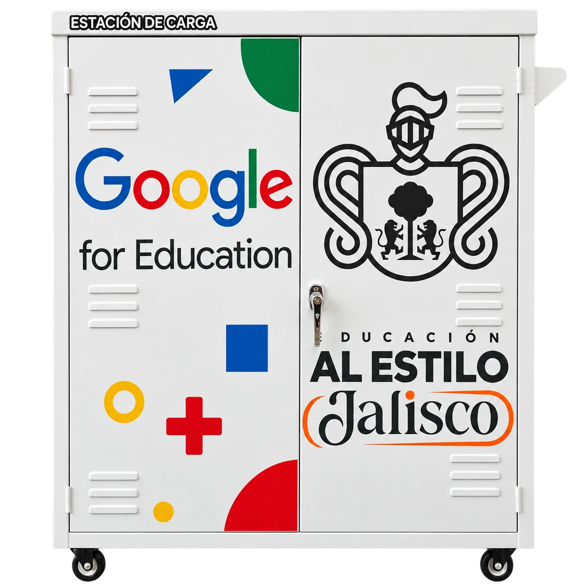
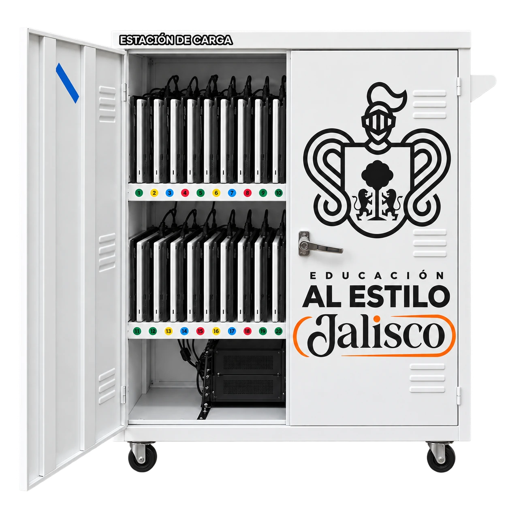
Abre el gabinete para conocer sus componentes.
Vista de referencia de un compartimiento. La distribución puede variar según el modelo.Haz una prueba breve antes de entregar los equipos. Si falta una condición, elige desde ahora cómo continuará la actividad.
Cuenta las Chromebooks disponibles, revisa su carga y prueba el equipo que usarás para mostrar la actividad. Define quién entrega, recibe y registra incidencias.
Prueba las cuentas autorizadas y el acceso a los archivos desde una cuenta de estudiante del dominio jaliscoedu.mx. Si usarás Classroom, verifica que el grupo ya esté incorporado y que pueda abrir la tarea.
Ten una pregunta, un producto y criterios de revisión. Prepara las fuentes y la consigna también en un archivo local probado o en papel.
Registra el mensaje y consulta al responsable de cuentas que indique la dirección escolar. Si necesitas restablecer la contraseña, utiliza el portal de recuperación de cuentas educativas. Mientras se resuelve, trabaja con el recurso impreso o con una demostración desde el equipo del docente. El alumnado puede analizar, discutir y producir su evidencia en papel.
Comparte la actividad con las cuentas autorizadas del dominio jaliscoedu.mx. Cada alumno usa su propio acceso.
Conserva la pregunta, el producto y los criterios. Cambia a los materiales locales o a la versión en papel.
Elige un lugar que permita entregar los equipos y mantener libre el paso.
Explícala y ensáyala con tu grupo desde la primera sesión.
Comprueba cuáles equipos tienen carga y registra cualquier incidencia.
Relaciona el número del equipo con el estudiante, pareja o equipo de trabajo.
Desconecta sujetando el conector, sin tirar del cable. Transporta la Chromebook cerrada y con ambas manos.
Usa una superficie estable y despejada; deja alimentos y bebidas aparte.
Si trabajan en pareja, alternen quién utiliza el teclado y quién revisa la consigna.
Anota el número de equipo y qué ocurrió para dar seguimiento después de la actividad.
Comprueba dónde quedó el producto. Guardar, sincronizar con Drive y entregar en Classroom son acciones distintas.
Antes de salir de la cuenta, verifica que la evidencia quedó respaldada. Si falta sincronizar, registra el pendiente y conserva una copia por el medio acordado.
Revisa el equipo, devuélvelo a su espacio y conecta su cargador. Comprueba el total recibido.
Ahora, conoce la ChromebookPractica las acciones que necesitarás con tu grupo.
La actividad mantiene su pregunta, su evidencia y sus criterios. El soporte puede cambiar a un archivo preparado o a una hoja de papel.
Kit mínimo: consigna visible, fuentes o datos guardados, cuaderno u hojas, lápiz y una forma acordada de recoger el producto.
Proyecta los materiales locales si ya probaste esa conexión. El grupo observa, conversa y produce la misma evidencia en papel. Si tampoco hay proyección, usa el material impreso o el pizarrón.
Empieza con la alternativa impresa. Para futuras sesiones, solicita la habilitación al responsable escolar y prueba el acceso con anticipación. El modo invitado no es una solución para conservar el trabajo.
Practica en el equipo que llevarás a clase. Cada recorrido termina con una acción que puedes comprobar.
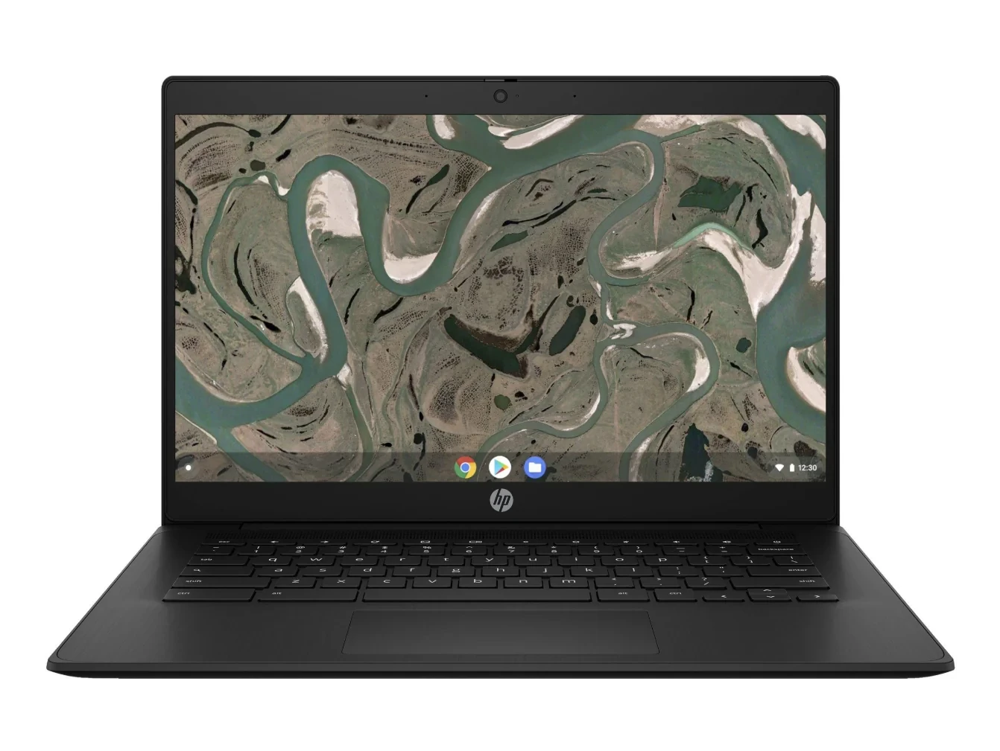
Los 40 equipos para el alumnado no tienen puerto HDMI. Reconoce sus conexiones USB-A, USB-C, audio y lector de tarjetas; la ubicación y disponibilidad de cada conexión se comprueban en el modelo del plantel.
Vistas de referencia. La distribución cambia por modelo; comprueba la etiqueta inferior “Model” o “Product” para elegir su manual.
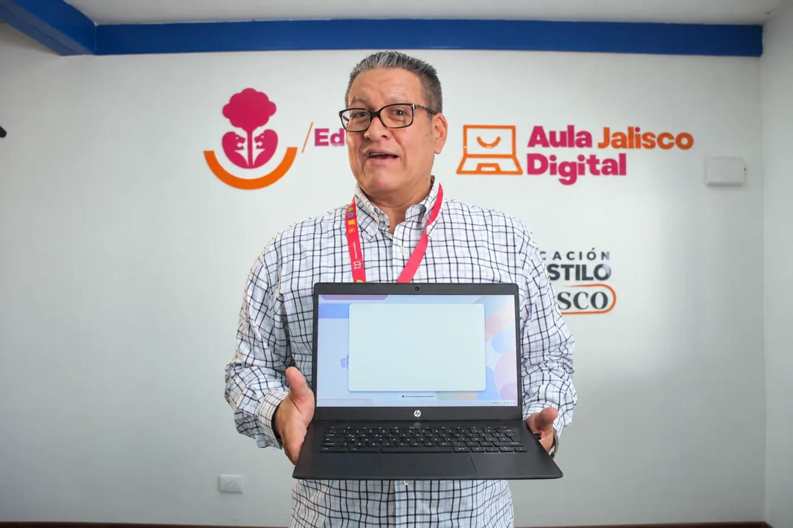
Inicia sesión con la cuenta autorizada y comprueba el acceso al material.
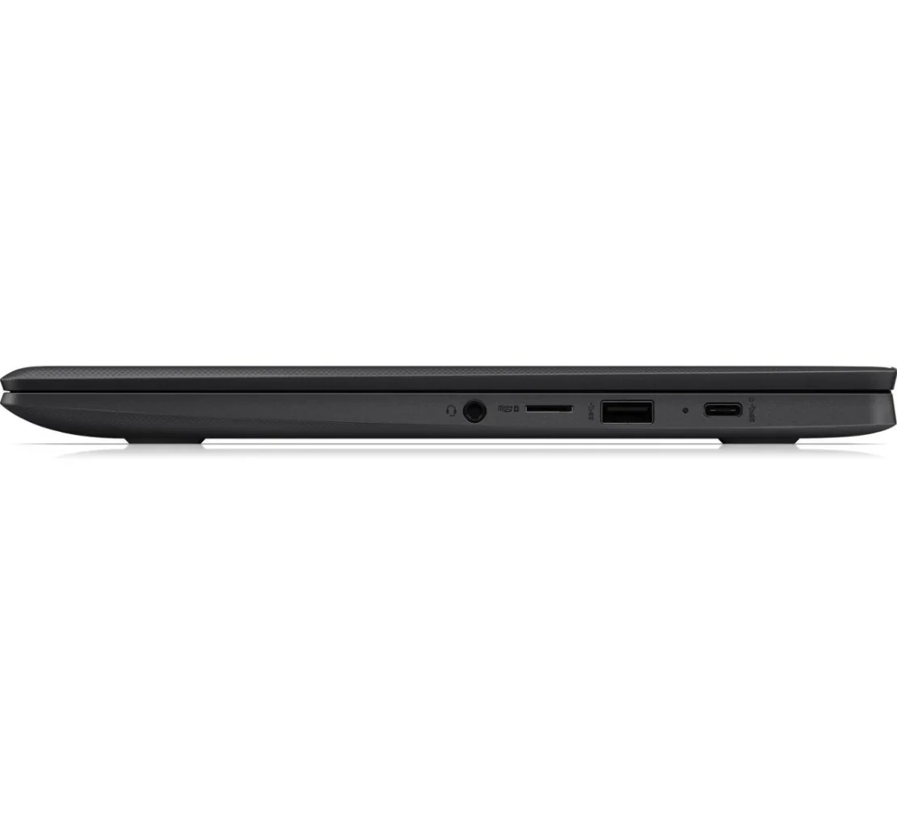
Identifica USB-A, USB-C, audio y lector de tarjetas en el equipo del alumnado.
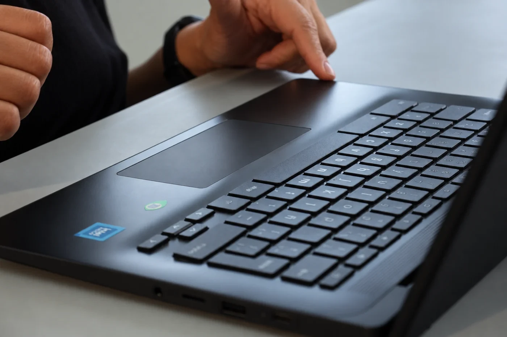
Practica los movimientos que usarás para abrir y recorrer los materiales.
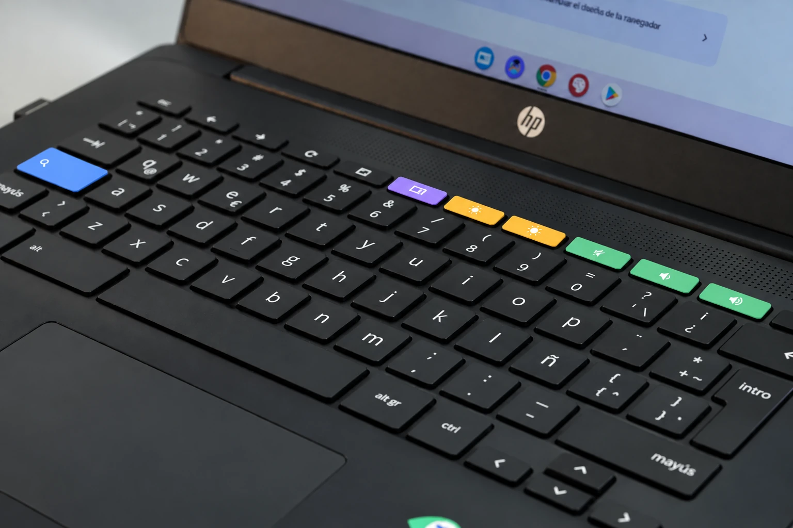
Ubica Búsqueda, Mostrar ventanas, brillo y volumen en tu propio teclado.
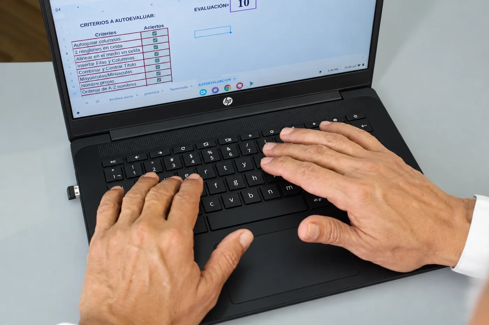
Identifica dónde está la evidencia y cómo comprobar que quedó respaldada.
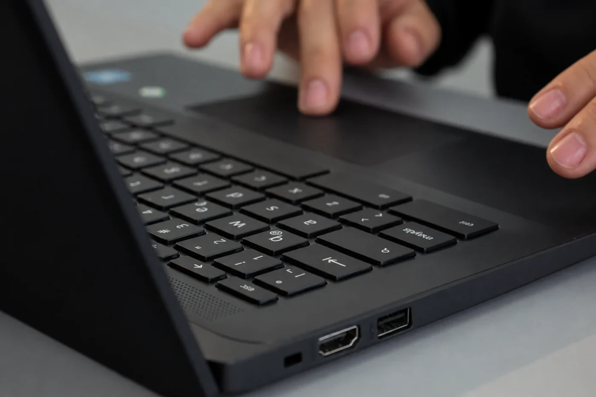
El HDMI que se muestra corresponde al equipo docente. Prepara desde ahí la pantalla o el proyector.
Mira las teclas coloreadas y presiónalas al mismo tiempo. Toca una imagen para verla más grande.
Esquemas de ubicación: busca los mismos símbolos en tu equipo. Búsqueda y Launcher cumplen la misma función.
Haz una comprobación breve y continúa con la alternativa preparada.
Revisa correo completo, conexión y mayúsculas. Si persiste el bloqueo, anota el mensaje y solicita ayuda al responsable de cuentas de la escuela. Utiliza la actividad impresa mientras se resuelve.
Comprueba qué cuenta está abierta. El propietario debe compartir el archivo con esa cuenta o grupo autorizado y dar el permiso de lectura o edición que corresponda.
Abre Archivos y revisa Descargas o Google Drive. En Drive, busca con la misma cuenta usada para crearlo. Guardar en el equipo no equivale a entregarlo en Classroom.
Mantén abierto el trabajo y activa el plan preparado. Continúa con archivos locales probados o con la misma consigna en papel. La entrega en Classroom y Formularios requiere conexión.
En el equipo docente, revisa cable HDMI, entrada del proyector y volumen. Los equipos del alumnado requieren USB-C compatible con video y el adaptador correspondiente. Prueba el recurso de clase antes de recibir al grupo.
Es una sesión temporal que puede estar deshabilitada por la escuela. No sustituye el acceso a Drive o Classroom y sus archivos se eliminan al salir. Prepara la evidencia en el acceso autorizado o en papel.
Ahora acompaña la participaciónExplora los ajustes que pueden facilitar la actividad a cada estudiante.
Parte de lo que necesita el estudiante. Prueben el ajuste juntos y comprueben si facilita la tarea.
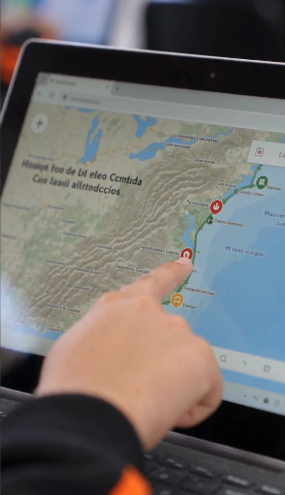
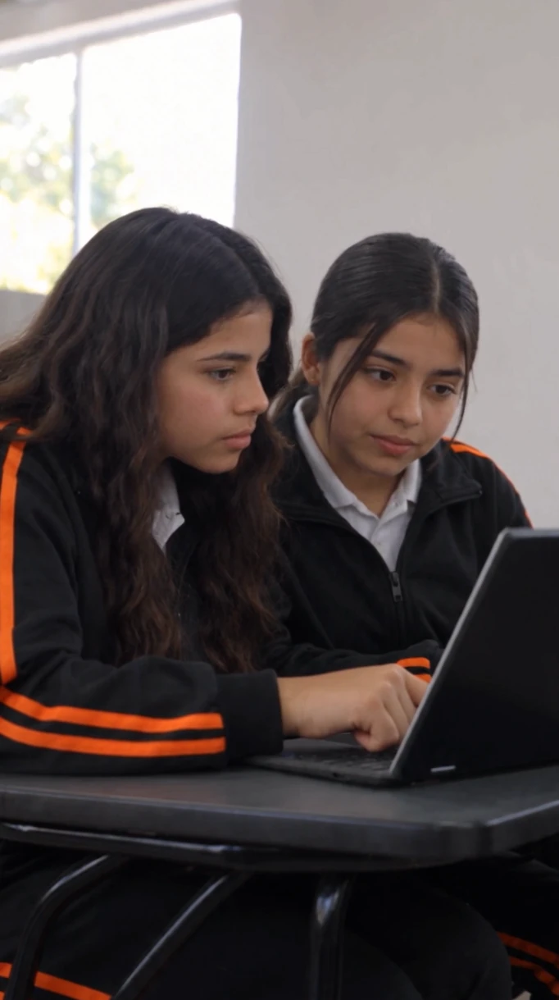
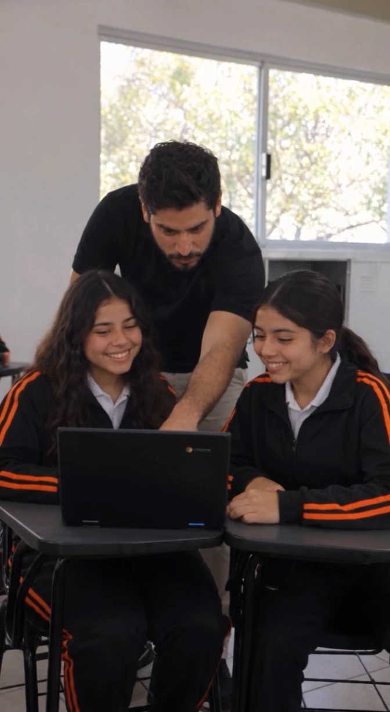
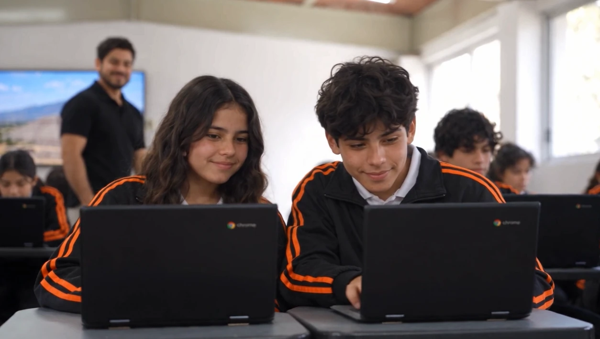
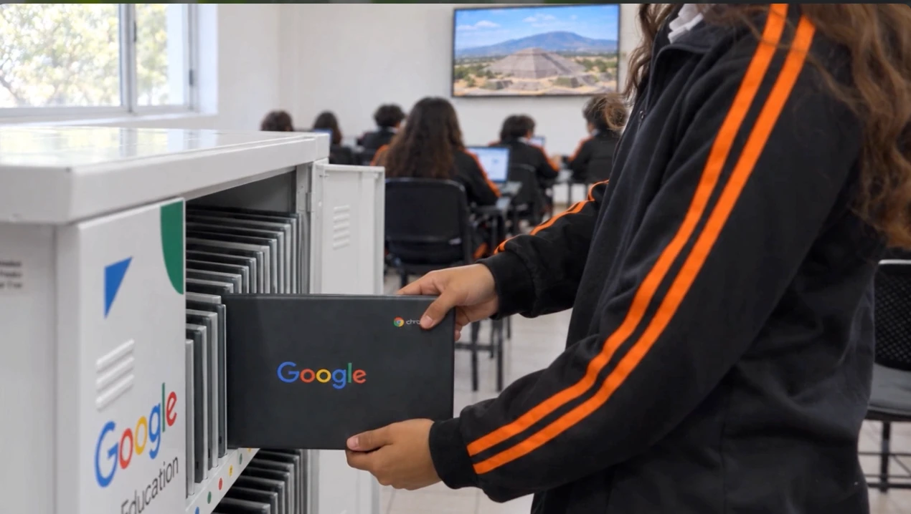
Acuerda cómo recibirá cada estudiante su equipo y dónde podrá trabajar con comodidad.
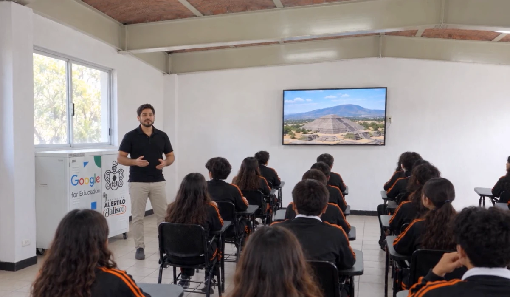
Los nombres y la disponibilidad de funciones pueden variar por modelo, versión y configuración institucional.
Practica también las funciones del equipoConsulta los recorridos de teclado, panel táctil y conexiones cuando los necesites.